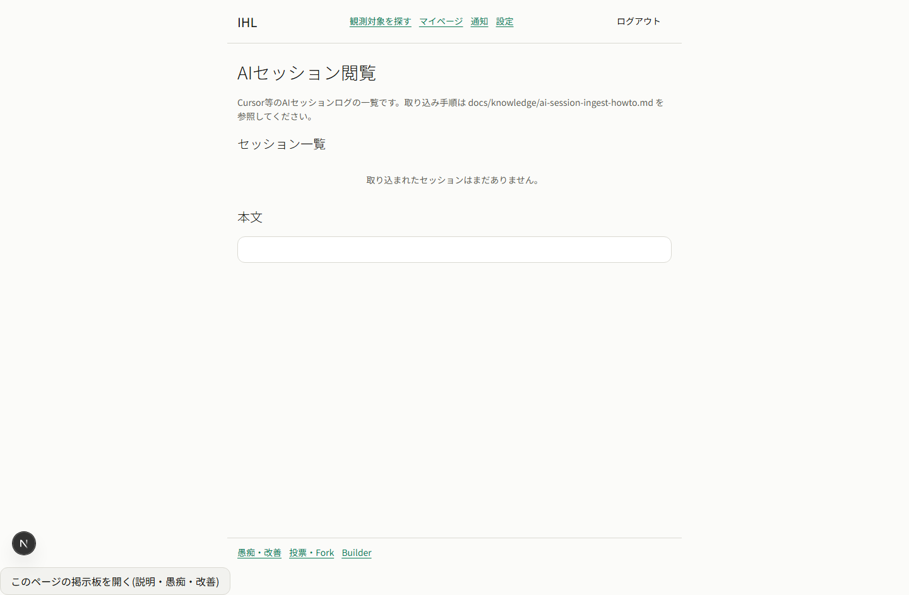
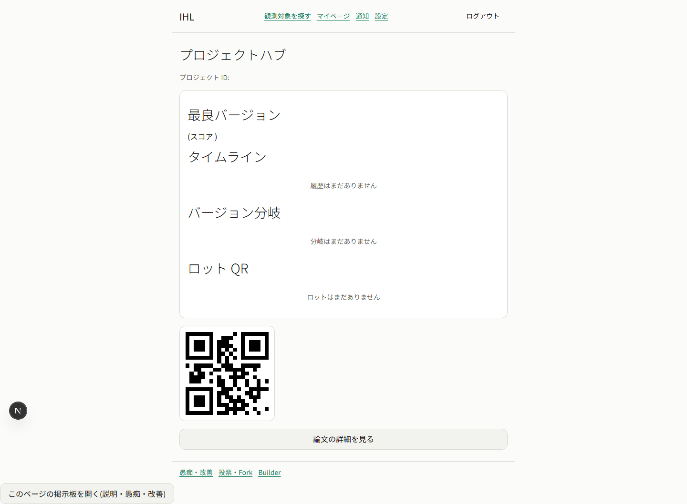
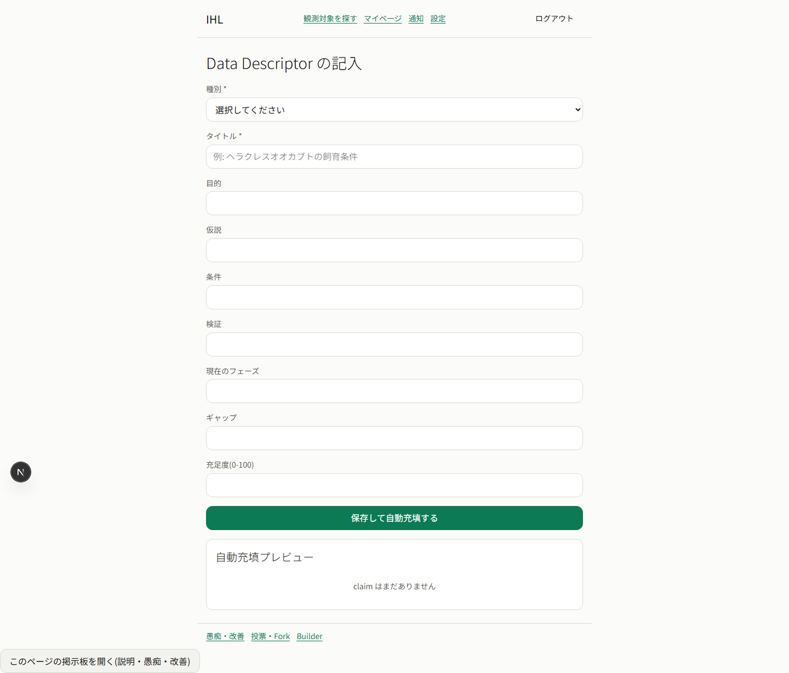
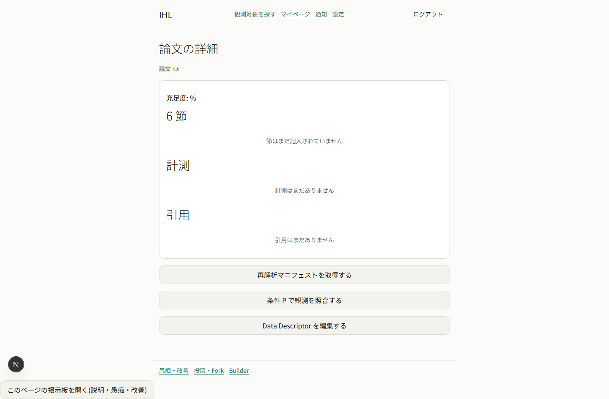
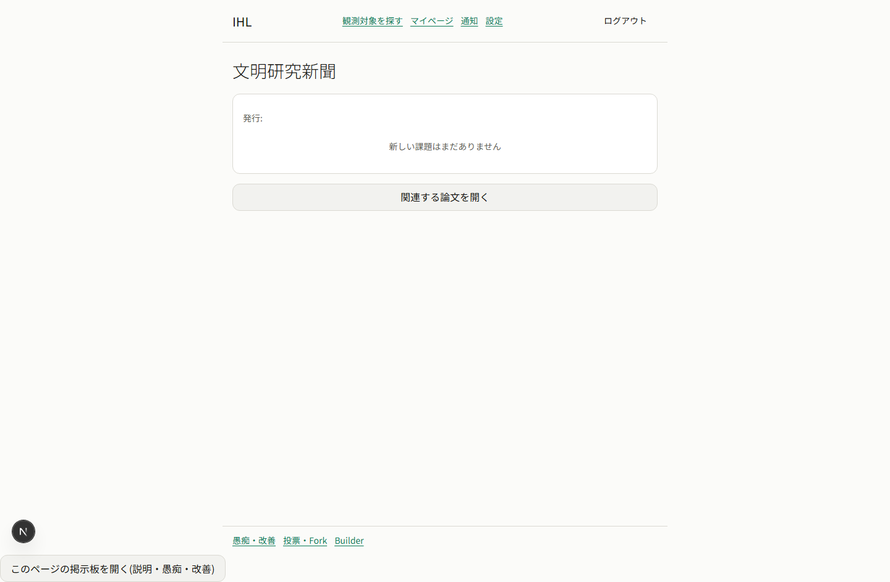
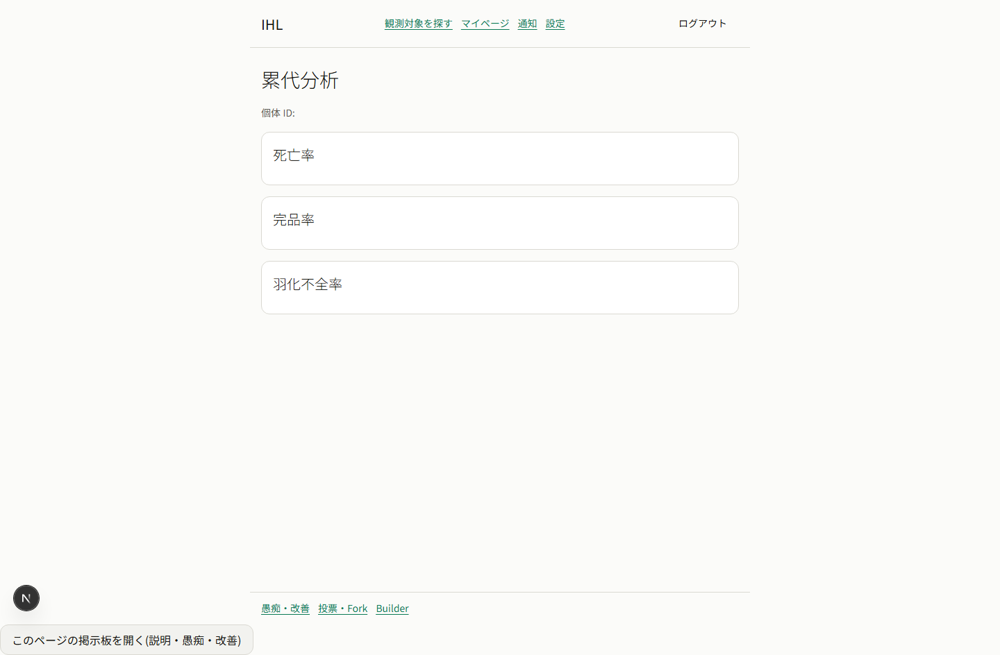
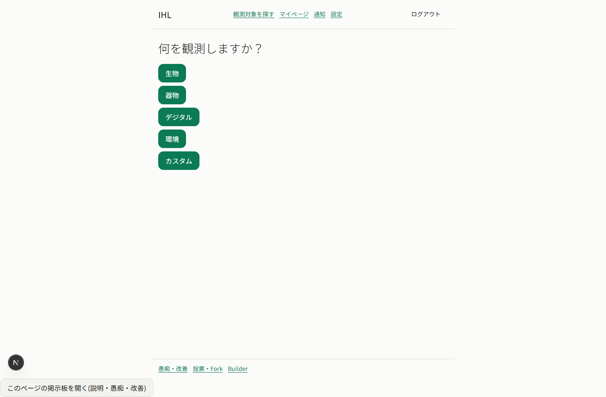
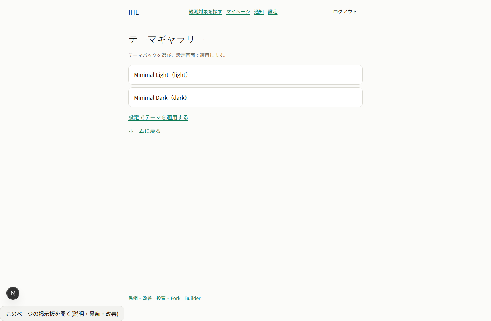
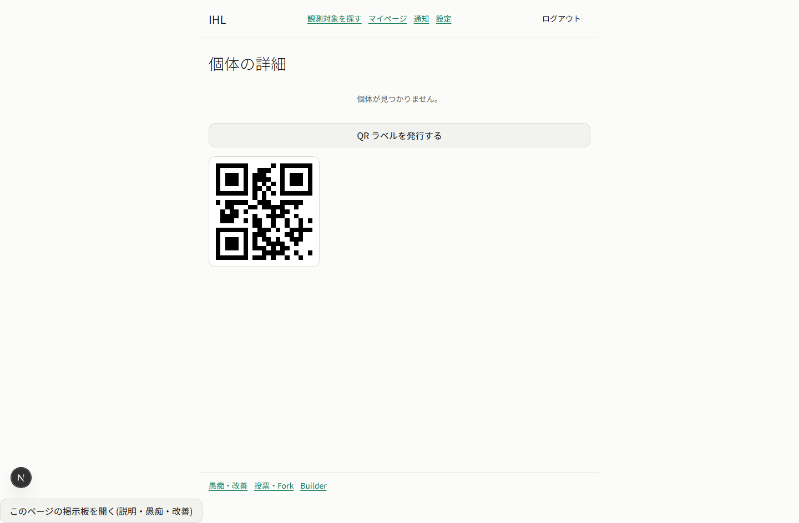
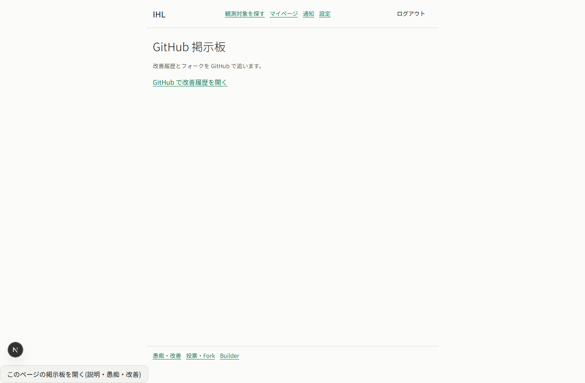

現状の問題サマリ(全画面自己監査§6より)
| 問題 | 内容 |
|---|---|
| 旧世代フロー並存 | obs-entry/obs-confirm(旧1画面フロー)と obs-register→entry→confirm(OBS-25正本の3画面フロー)が両方いまだ実装に現存。navigation.jsonも両方の辺を保持したまま。 |
| home導線が旧フローのみ | home.jsonの主導線「観測を始める」は今も旧obs-entryへ向き、OBS-25正本の入口obs-registerはhomeから到達不可の孤立画面のまま(cutover未実施)。 |
| 孤島画面(オーファン) | navigation.json上でinbound edge 0の画面が複数存在。研究論文クラスタ5画面(project-hub/data-descriptor/paper-detail/research-newspaper/research-search)はURL直打ちでしか到達できない。 |
| 単機能画面 | language-select/obs-domain-select/theme-gallery/knowledge-github等、遷移先画面と機能が完全重複するのに独立画面のまま残っているものが複数。 |
再設計後の画面マップ図(正本 §3)
市場のタブは「買う」「出品」の2つだけ(「この出品/取引」タブは廃止)。取引中は独立画面。話し合いの場への入口は対象側の「…」のみ(ナビ常設なし)。観測の唯一の入口はobs-register(旧obs-entryはretire)。
IA変更一覧(統合・廃止・導線差し替え・全18件 — §6.2から整形)
| # | 変更 | 種別 | 理由(1行) |
|---|---|---|---|
| 1 | language-select を廃止 | 廃止 | §4.7既決・setup-profileに統合済み方針 |
| 2 | country-select を setup-profile に統合 | 統合 | §4.7既決・country+language 1画面化 |
| 3 | obs-domain-select を廃止 | 廃止 | obs-entry内ドメインselectと完全重複(language-select 0点と同型) |
| 4 | obs-entry を obs-register-entry へ統合 | 統合 | 個体/生物観測は新OBS-25フローで代替可(cutover依存: home導線+E2E移行) |
| 5 | obs-confirm を obs-register-confirm へ統合 | 統合 | 計測値を表示しない機能不全の旧確認画面・新confirmで代替 |
| 6 | obs-search を obs-register に統合しnav重複解消 | 統合 | 対象検索の入口3重複(global nav/自画面/obs-navigator)を1つに |
| 7 | knowledge-github を knowledge-hub カードに統合 | 統合 | 外部リンク1つの単機能・独立画面の必然性なし |
| 8 | theme-gallery を settings に統合 | 統合 | 設定のテーマselectと完全重複・付加価値ゼロ |
| 9 | platinum-shop を economy-status の1セクション化 | 統合 | c7既決・購入前確認2ステップ化を同時実施 |
| 10 | cross を individual-detail 内セクション化 | 統合 | 死にUI・遷移路消失済み・実結線まで単独画面凍結 |
| 11 | ai-sessions を一般ナビから隔離 | 廃止(隔離) | Cursor等の開発者内部文言・一般ユーザーの利用理由なし |
| 12 | home「観測を始める」→ obs-register へ差し替え | 導線差し替え | OBS-25新フローを唯一の入口にするcutover本体 |
| 13 | home「ドメインから選ぶ」導線削除 | 導線差し替え | obs-domain-select廃止に伴う導線除去 |
| 14 | home「個体を開く」のid無しnavigate是正 | 導線差し替え | id無しnavigateでindividual-detailが常に未検出になるバグ是正 |
| 15 | qr-resume遷移先 → obs-register-entry | 導線差し替え | 物理QR接点が旧劣化フローへ誤誘導している非一貫性の是正 |
| 16 | obs-navigator改名「種の判定」+obs-register-new補助リンク化 | 導線差し替え | 「対象を特定する」が個体選択と混同・Family0-3ダミーを実データ化 |
| 17 | navigation.json 旧login系辺を削除 | 導線差し替え | §4.7反映漏れ(旧オンボーディング辺が新setup-profile辺と共存) |
| 18 | cross・bio-card辺の3者不整合解消 | 導線差し替え | navigation.json・要件V3-IND-12・実装の3者不整合を解消 |
全55画面 → 確定分11件除去で44画面 / 裁定(下記4.セクション)込みで最大~38画面まで削減可能(詳細: ui-redesign-round2.md §6.2)。
| 内部語(禁止) | ユーザー語(正) |
|---|---|
| 相談室 / dispute / 二人部屋 | 話し合いの場 |
| 買い手/売り手(ラベル表示) | 表示しない(whenで自分のボタンだけ出す) |
| actor_id 生ハッシュ | 表示名(fallback短縮のみ) |
| listing/trade等のID露出 | 対象カード(画像+名前)で示す |
| 「この出品取引」等の複合内部語 | 買う / 出品 / 取引中 |
新語を画面に出すときは初出画面に1行説明を添える(login 100点の条件を全画面規則化)。
「わかりやすく改名して、『話し合いの場』。概念をもっと上にして。取引トラブルから、掲示板の表現がよくない指摘、出品物規約違反じゃないか?って指摘っていろんなことができる。タグや遷移もとで少し工夫すればとても便利なトラブル解決するかもしれない機能になりませんか?」round-16-answers-raw.md 受領4
定義: あらゆる対象に紐づけて開ける当事者間の部屋。構成 = 対象カード(元の取引/投稿/出品へ戻れる)+用途タグ+メッセージ+合意記録。
用途タグ: 取引トラブル / 表現についての指摘 / 規約違反の疑い / その他の相談
入口: 対象側の「…」メニューのみ(取引詳細「トラブルについて話し合う」/掲示板投稿「この表現について話し合う」/出品「規約違反の疑いを相談する」)。
出口: ①合意(合意文が記録に残る=透明ログ) ②不成立→「公開して投票」(GOV-07・当事者opt-in・7日) ③立ち消え(期限で自動クローズ)
Before(現行・market-trade-browse=買うタブ)

ユーザー指摘(逐語・受領11)
「market-trade「買う」タブ 70点: 使いやすそう。この出品/取引タブがあるのが変。」round-16-answers-raw.md 受領11
「無駄な文字が多すぎる。「買い手」って要る?「この出品取引」タブが変・ここじゃない。ここは買うと出品だけでいい。遷移が変。」round-16-answers-raw.md 受領11(market-trade全体への指摘)
After案(390px / 1440px)
390px

1440px

遷移の変更点: タブは「買う」「出品」の2つだけ(「この出品/取引」タブを廃止)。役割ラベル・自明な説明文を全削除。画像タップで詳細へ。
Before(現行・market-trade-detail=タブ構成の一部)

ユーザー指摘(逐語・受領11)
「無駄な文字が多すぎる。「買い手」って要る?「この出品取引」タブが変・ここじゃない。ここは買うと出品だけでいい。遷移が変。」round-16-answers-raw.md 受領11
After案(390px / 1440px)
390px

1440px

遷移の変更点: 自分の出品管理+新規出品をこのタブに統合。成立時は「取引中に移動しました」トースト+リンクで trades-list へ。
Before(現行・market-trade-detail=取引ボードが市場タブに相乗り)
ユーザー指摘(逐語・受領11)
「無駄な文字が多すぎる。…「この出品取引」タブが変・ここじゃない。ここは買うと出品だけでいい。遷移が変。」round-16-answers-raw.md 受領11
After案(390px / 1440px)
390px

1440px

遷移の変更点: 取引ボードを市場から独立させた新画面。1取引=1行カード(相手表示名・対象サムネ・現在ステップ・自分の次アクションボタン1つ)。
Before(現行・market-trade-detail)
ユーザー指摘(逐語・受領11)
「無駄な文字が多すぎる。「買い手」って要る?…遷移が変。」round-16-answers-raw.md 受領11
「①market-trade-detail 悪い点: 振り込みを申請する、入金を確認した、って、両方表示されているが、買い手、売り手のみ表示されるでいいものがありますよね。そこらへん調整して。」round-16-answers-raw.md 受領10(同一画面への先行指摘)
After案(390px / 1440px)
390px

1440px

遷移の変更点: ステップバー(合意→支払→発送→受取→完了)+whenで自分のアクションのみ表示。「話し合いの場」入口は「…」内に格下げ(常設ボタンにしない)。
Before(現行・knowledge-thread)

ユーザー指摘(逐語・受領11)
「knowledge-thread 0点: 何のための画面か分からない。話し合いやすさが一番大事。賛成反対保留がなんで全部の投稿にあるの?議題に対してじゃないの?考え直して。やり直し。相談室ってなんだよ、知らないよその概念。」round-16-answers-raw.md 受領11
After案(390px / 1440px)
390px

1440px

遷移の変更点: 議題カードを最上部に固定し、賛成/反対/保留+集計バーはここ1箇所だけに統合。各投稿の「…」に引用/リンクコピー/この表現について話し合う(→話し合いの場)/通報を格納。
Before(現行・dispute=紛争相談室)

ユーザー指摘(逐語・受領11)
「dispute 0点(ごみ・導線が変。以降レビュー拒否)」round-16-answers-raw.md 受領11
After案(390px / 1440px)
390px

1440px

遷移の変更点: 入口は対象側「…」のみ(actor ID手入力を廃止)。ヘッダー=対象カード+用途タグ、フッター=「合意する」「公開して投票」。
Before(現行・login=100点)

ユーザー指摘(逐語・受領11)
「login 100点: おもろい。あり。ただし初見に説明要る。」round-16-answers-raw.md 受領11
After案(390px / 1440px)
390px

1440px

遷移の変更点: 変更なし。初見向け説明1行を追加(「メールアドレスだけでログインできます。パスワードはありません」)。
Before(現行・login-sent=0点)

ユーザー指摘(逐語・受領11)
「login-sent 0点: マジックリンクはURLクリックでログインでしょう?こんな番号じゃない。」round-16-answers-raw.md 受領11
After案(390px / 1440px)
390px

1440px

遷移の変更点: 主従を反転。「届いたリンクをクリックするとログイン完了」+再送を主動線にし、6桁コードは「別の端末でメールを開いた場合」の折りたたみ内フォールバックに格下げ。
Before(現行・setup-profile=言語のみ / country-select・language-select=別画面)


ユーザー指摘(逐語・受領11)
「country-select 90点(言語もまとめて) / language-select 0点(独立画面不要・統合)」round-16-answers-raw.md 受領11
After案(390px / 1440px)
390px

1440px

遷移の変更点: language-select独立画面を廃止しsetup-profileに統合。表示名+言語(必須・上)+国(必須・下・「表示されません。地域ルールの適用にだけ使います」1行)の1画面。country-select(90点)の見た目を国フィールドに流用。
Before(現行・terms=30点)

ユーザー指摘(逐語・受領11)
「terms 30点(本文追加・わかりやすい版切替・解説動画導線)」round-16-answers-raw.md 受領11
After案(390px / 1440px)
390px

1440px

遷移の変更点: タブ化(わかりやすい版=要約カード⇔正式版=全文)。同意ボタンは両タブ共通下部に固定。解説動画導線は設定にURLがある時だけ表示(空なら非表示)。
注記: これはAIの自己採点です(スクショ+screen-def定義の静的監査・実操作なし)。上の10画面(受領11で人間が既に採点済み)とは別に、残り46画面をAIが自己監査し予測点を付けたものです。実データでの動作確認・実際のユーザー採点ではありません(限界の詳細は正本 §6.4)。
監査表(予測点 昇順・46画面)
| # | 画面 | 予測点 | 主違反 | 処置 |
|---|---|---|---|---|
| 1 | ai-sessions | 5 | Cursor/リポジトリ内パス等の開発者内部文言を直接露出 | retire |
| 2 | project-hub | 10 | オーファン画面(inbound edge 0)+「バージョン分岐」等git語を無説明 | fix/裁定 |
| 3 | data-descriptor | 15 | ナビ辺皆無で到達不能+「Data Descriptor/claim」未翻訳 | fix/裁定 |
| 4 | obs-domain-select | 15 | 遷移先obs-entry内と完全重複の単機能画面 | retire |
| 5 | paper-detail | 15 | オーファン+「条件P」内部変数露出 | fix/裁定 |
| 6 | research-newspaper | 15 | オーファン+固定ボタンが対象論文と無関係 | fix/裁定 |
| 7 | theme-gallery | 15 | 設定のテーマselectと完全重複・行き止まり | merge→settings |
| 8 | cross | 15 | 率カード3枚とも空欄(UI未結線)+経由路消失 | merge→individual-detail |
| 9 | individual-detail | 20 | id無しnavigateで常に未検出+未検出でもQR表示 | fix |
| 10 | knowledge-github | 20 | 外部リンク1つの単機能なのに独立画面 | merge→knowledge-hub |
| 11 | ui-templates | 22 | home導線「選ぶ」に反し保存フォームのみ | fix |
| 12 | match | 25 | screen-defに画像ノード皆無(核心の直感評価不能) | fix |
| 13 | paper-match | 25 | 2入口がid未継承+生URLクエリ露出 | fix |
| 14 | research-search | 25 | オーファン+結果行タップ不可 | fix |
| 15 | obs-templates | 28 | 1保存1項目でテンプレを作れない+生ID手入力 | fix |
| 16 | knowledge-board | 30 | スレ一覧各項目がタップ不可(遷移未実装) | fix |
| 17 | obs-confirm | 30 | 入力計測値を確認画面に一切表示せず機能不全 | merge→obs-register-confirm |
| 18 | obs-navigator | 30 | 分類ツリーにFamily0-3プレースホルダ露出 | fix |
| 19 | platinum-shop | 30 | 購入前確認なしの即時POST(c7でアンチパターン) | merge→economy-status |
| 20 | qr-resume | 30 | 続行ボタンが旧obs-entryへ誤誘導・個体カード無し | fix |
| 21 | device | 33 | 設置場所の生IDが画面上どこにも出ず入力不能 | fix |
| 22 | bio-card | 35 | 種/サイズ空欄・一括発行UI無し・生きた導線無し | fix |
| 23 | obs-entry | 35 | 対象/父/母個体IDを生値入力・obs-register-entryの劣化版 | merge→obs-register-entry |
| 24 | knowledge-paper | 35 | 論文一覧が描画されない(source_path不整合) | fix |
| 25 | obs-detail ★ | 38 | {{data.lab-env…}}が未展開の生表示+V3-OBS-72露出 | fix |
| 26 | species | 40 | fork元ID欄に必要な生IDが一覧に出ず入力不能 | fix |
| 27 | profile | 40 | 「BAN: false」生真偽値表示・empty_text未到達バグ | fix |
| 28 | template-market | 40 | ランキングにempty_text無く0件時完全空白 | fix |
| 29 | home | 42 | 設定見出し下にステータス/取引/コストchip混在(IA誤配置) | fix |
| 30 | placement-qr | 45 | {{data.lab-env-current…}}生表示+V3-OBS-72露出 | fix |
| 31 | economy-status | 50 | PT影響力残高が新語のまま無説明 | fix |
| 32 | settings | 50 | レビュー対象スクショが現行JSONより大幅に古い | fix |
| 33 | obs-register | 55 | homeから到達不可の孤立(cutover未実施) | fix |
| 34 | knowledge-hub ★ | 60 | 「正本」「フォーク」「Fork」「Builder」内部語が一画面に集中 | fix |
| 35 | costs | 63 | 「manual入力/manual/(R2)」内部タグ+円/JPY混在 | fix |
| 36 | ai-profile-settings | 65 | 「検索補助(RAG)」略語を無説明露出 | fix |
| 37 | obs-freetext | 65 | 解析結果に個体IDを生値表示(語彙辞書違反) | fix |
| 38 | obs-register-batch-confirm | 65 | 未選択の空状態のみで実データ表示品質未検証 | fix |
| 39 | obs-search ★ | 68 | サムネイル未表示(画像直感評価の設計意図に未達) | keep/fix |
| 40 | obs-register-confirm | 70 | スクショが体重/体長とも空値で実データ未検証 | fix |
| 41 | obs-register-batch-done | 70 | 空状態のみで実データ未検証 | keep |
| 42 | obs-register-done | 78 | 空値表示で実データ未検証(構成は良好) | keep |
| 43 | obs-register-entry ★ | 78 | 対象個体が空アバターのみで名前/写真カード無し・Δ未検証 | keep/fix |
| 44 | obs-register-batch | 80 | 「該当457件」等の内部集計語が無機質に露出 | keep |
| 45 | obs-register-new | 80 | 1440pxで下半分が大きく余白 | keep |
| 46 | obs-register-clutch | 83 | 情報量多く1440pxでも縦長 | keep |
分布: ≤20点=10画面(構造欠陥・オーファン・純重複)/21-40=15画面/41-60=8画面/61-83=13画面。低得点の主因は個別部品の質でなく「IA(到達性)・遷移(id継承)・語彙(内部語)」の3層(詳細: ui-redesign-round2.md §6.1)。
ワースト10 詳細(違反と是正方針)

現状: Cursor等のAIチャットログ一覧をSettings配下に露出。「Cursor」「docs/knowledge/ai-session-ingest-howto.md」という開発者ツール名・リポジトリ内パスをそのままエンドユーザーに提示(全違反中最重度)。
After: settingsのサブメニューから外す。開発者/管理者専用の隔離面(ui_exposure=developer時のみ表示)へ移設。一般ユーザーには存在ごと非公開。

現状: navigation.jsonにinbound edge皆無のオーファン。「最良バージョン」「バージョン分岐」「ロットQR」等git/version比喩を生体データに無翻訳で適用、「プロジェクト」が何を指すか説明皆無。
After: 導線追加より先に「この概念(プロジェクト=版管理された飼育系統)が一般ユーザーに必要か」を人間裁定。必要ならversion/branch語を「系統」「分岐飼育」等へ全訳+1行説明。不要なら凍結。

現状: オーファン(URL直打ちのみ)。見出し「Data Descriptor」が英語学術語のまま無説明、プレビュー内「claim」も無説明の英語専門語。
After: knowledge-hub「論文」柱から遷移導線を新設し「データ記述(論文の観測データ定義)」等の訳語+1行説明を付す、または本ラウンド対象外として明示凍結。研究論文クラスタ一括で裁定(下記4.(b))。

現状: オーファン。ボタン「条件Pで観測を照合する」の「条件P」は要件定義の変数名がそのまま流出、遷移先paper-matchへid継承もしていない。「論文」「マニフェスト」の説明も画面に無い。
After: 知の広場→論文の流れに本画面を組込む。「条件P」→「この論文が求める観測条件」等へ置換。paper-matchへのnavigateに?id={{params.paper_id}}を付与し継承させる。

現状: オーファン。「関連する論文を開く」が対象論文と無関係な固定ボタン。生成主体・目的の説明が皆無で初見には謎の存在。
After: 知の広場配下に導線追加。「AIが自動生成した研究課題ダイジェスト」等の生成主体説明を冒頭に1行。各記事から対象論文へのper-item紐付けリンクへ修正。

現状: 死亡率/完品率/羽化不全率の値が3枚とも空欄(集計APIは在るがUI未結線)。要件V3-IND-12の「個体詳細経由必須」の遷移が実装から消失、n数・対象個体名も皆無。
After: individual-detail内の「この血を次に使うか」セクションへ統合。実データ結線+n数・対象個体名表示+ドリルダウンが実装できるまで単独画面は凍結。navigation.jsonのcross辺を追従。

現状: 観測ドメインを選ぶだけの単機能画面。遷移先obs-entry内に同じ「観測ドメイン」selectが既存で100%重複。主要ユースケース(生物観測)では画面自体が不要。round2が0点認定したlanguage-selectと同型。
After: 廃止。ドメイン選択を残す場合でも次画面の先頭1フィールドへ統合(country+language統合と同方針)。homeの「ドメインから選んで始める」導線も除去。

現状: テーマ閲覧専用で適用は別画面(設定)必須の分割過剰。リスト項目は非クリックの行き止まり。設定のテーマselectと内容が完全重複しプレビュー等の付加価値ゼロ。
After: 設定画面のテーマ選択へ統合。フォーク済みテーマのプレビューを見せたいなら、その機能ごと設定内に実装する(単独画面は作らない)。

現状: home「個体を開く」がid無しでnavigateするため必ず「個体が見つかりません」。にもかかわらず未検出状態でも「QRラベルを発行する」ボタンと実QRコードが表示される(対象整合違反・スクショで実見確認)。cross/bio-cardへの導線はnav.json記載のみで実体消失。
After: 個体一覧/検索から実IDで遷移する入口を復活(homeのnavigateに?id付与 or 一覧経由化)。未検出時はQR発行導線を隠す。実データで再撮影し「個体のホーム画面」として再採点。

現状: GitHubの改善履歴・フォークへ外部リンクで飛ぶだけの単機能。「フォーク」が無説明のgit内部語のまま、内容1行で大半空白でモバイルでも間延び。
After: knowledge-hubの「GitHub掲示板」カードから直接外部リンクを開く形に統合し本画面は廃止。「フォーク(改善版の枝分かれ)」等の1行説明をカードに添える。
(a) profile + economy-status を1ステータス画面に統合するか
現状: カルマ/貢献度がprofileとeconomy-statusの両方に重複表示され、どちらが正本か不明瞭。c7 usecase-driven-design.mdは既に統合の方向で設計済み。
推奨: 統合する(c7既決の方向)
(b) 研究論文クラスタ5画面(paper-detail/project-hub/research-search/research-newspaper/data-descriptor)の扱い
現状: navigation.json上でinbound edge 0、どこからも到達できない孤島。知の広場「論文」柱配下に導線を新設するか、本ラウンド対象外として凍結するかの裁定が必要。
推奨: 導線新設は最小1本(知の広場「論文」柱)+残り4画面は当面凍結
(c) 非生物ドメイン観測(鉱物/デジタル等)の要否
現状: obs-entry(汎用ドメイン観測画面)をretireすると、生物以外(鉱物/デジタル/場所/カスタム)の観測記録手段が失われる。需要が実在するか裁定が必要。
推奨: 当面廃止・生物観測に集中